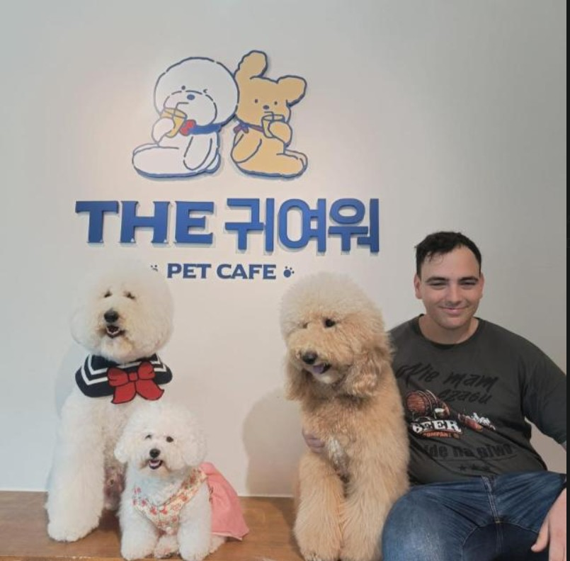

root@JosephSchtein:~/Kfat-Sava ISR/msc$ ./sys_boot.sh --verbose
_ _ ____ _ _ _ | | ___ ___ ___ _ __ | |__ / ___| ___| |__ | |_ ___(_)_ __ _ | |/ _ \/ __|/ _ \ '_ \| '_ \ \___ \ / __| '_ \| __/ _ \ | '_ \ | |_| | (_) \__ \ __/ |_) | | | | ___) | (__| | | | || __/ | | | | \___/ \___/|___/\___| .__/|_| |_| |____/ \___|_| |_|\__\___|_|_| |_| |_|
SYS.OP: JOSEPH SCHTEIN // V_1.7.1
LOCATION: Kfat-Sava ISR
STATUS: MASTER'S CANDIDATE ONLINE
> SYSTEM BIO: Developer specializing in heavy mathematical logic, custom rendering (HLSL/Unity), and industrial-grade performance systems.
> ACQUIRING TARGET SKILLS: C++, C#, Construct 3, Blender (Rigging/Animation).

root@JosephSchtein:~/Kfat-Sava ISR/msc$ _